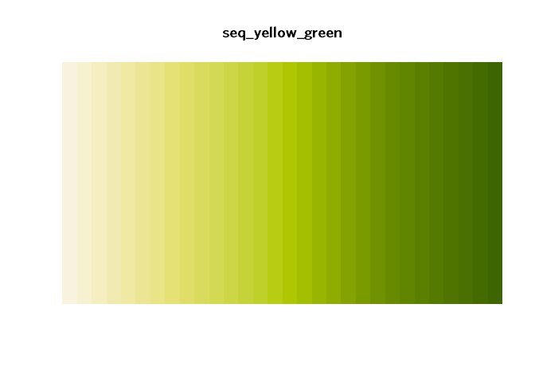
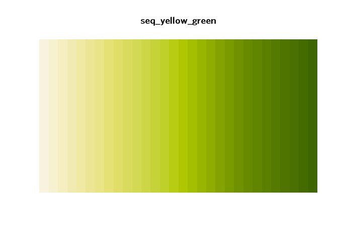
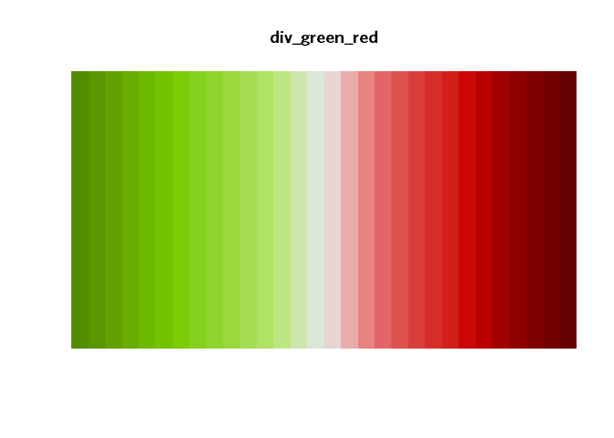
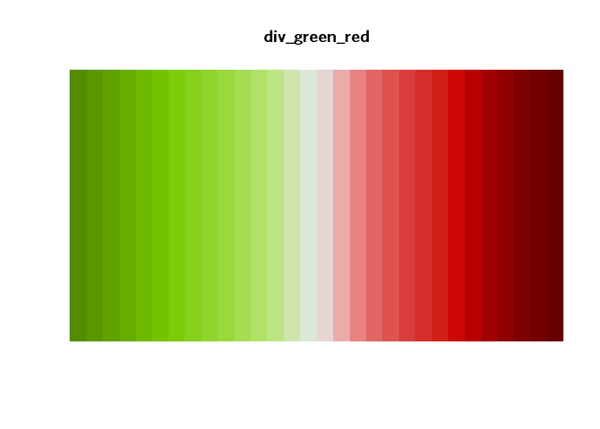

This R package provides themes and color scales for ggplot2, based on Chicago Metropolitan Agency for Planning (CMAP) design guidelines.
Installation
Run the following:
# install.packages("devtools") devtools::install_github("CMAP-REPOS/cmapplot") # then load the package as you would any other library(cmapplot)
Examples
For testing, the cmapplot package contains a variety of sample datasets. Each dataset has a man file that can be queried for additional details. Datasets currently included are:
#> cluster_jobchange
#> economy_basic
#> grp_over_time
#> percentile_wages
#> pop_and_laborforce_by_age
#> traded_emp_by_raceThe following provided code uses the sample datasets to produce publishable or near-publishable graphics:
# A bar chart ggplot(cluster_jobchange, aes(x = reorder(name, jobchange), y = jobchange, fill = category)) + geom_col() + coord_flip() + theme_cmap()

# a stacked bar chart filter(traded_emp_by_race, variable %in% c("SpecializedTraded", "UnspecializedTraded")) %>% ggplot(aes(x = reorder(Race, -value), y = value, fill = variable)) + geom_col(position = position_stack(reverse = TRUE)) + scale_y_continuous(labels = scales::percent) + theme_cmap()

# a grouped and stacked bar chart (via `interaction()`) ggplot(pop_and_laborforce_by_age, aes(x = interaction(year, variable), y = value, fill = age)) + geom_col(position = position_stack(reverse = TRUE)) + coord_flip() + theme_cmap()

# a grouped and stacked bar chart (via `interaction()`) ggplot(economy_basic, aes(x = interaction(year, variable), y = value, fill = sector)) + geom_col(position = "fill") + scale_y_continuous(labels = scales::percent) + coord_flip() + theme_cmap()

# a non-time-series line chart ggplot(percentile_wages, aes(x = percentile, y = wage, color = cluster)) + geom_line() + scale_y_continuous(labels = scales::dollar) + theme_cmap()

# a time-series line chart ggplot(grp_over_time, aes(x = year, y = realgrp, color = cluster)) + geom_line() + geom_text_lastonly(add_points = TRUE) + theme_cmap()

Using CMAP palettes in R ggplot
Palettes based on the CMAP color palette can be applied directly to ggplot graphics. The package contains both discrete and continuous color palettes. Each type of palette can be applied to either the color or fill attributes of a ggplot.
Discrete palettes
Add discrete palettes by adding either a cmap_fill_discrete or cmap_color_discrete object to a ggplot. Note that discrete palettes will automatically interpolate additional colors if the dataset has more colors than the palette. This can be helpful but is not ideal for finished graphics.
ggplot(percentile_wages, aes(x = percentile, y = wage, color = cluster)) + geom_line() + scale_y_continuous(labels = scales::dollar) + theme_cmap() + cmap_color_discrete(palette = "prosperity")

The following gradients are available:


Continuous palettes
Add continuous palettes by adding either a cmap_fill_continuous or cmap_color_continuous object to a ggplot. For example:
percentile_wages %>% filter(cluster %in% c("Biopharmaceuticals", "Hospitality and Tourism", "Paper and Packaging")) %>% ggplot(aes(x = cluster, y = wage, color = percentile)) + geom_point(size = 5) + scale_y_continuous(labels = scales::dollar) + coord_flip() + theme_cmap() + cmap_color_continuous(palette = "seq_red_purple")


 



 
